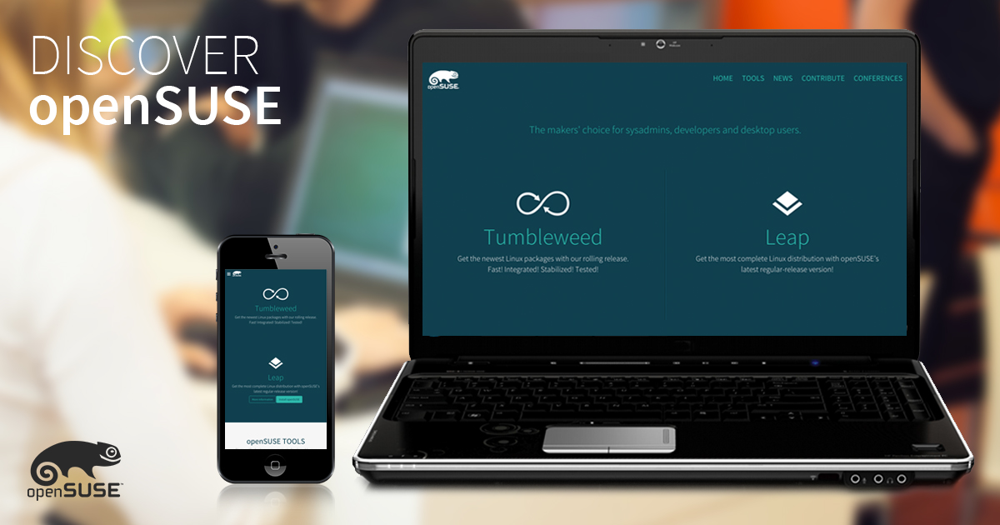

Windows 1.0 (1985)
.jpg)
Windows 1.0 (1985) A primeira versão do SO foi lançada no longínquo ano de 1985 e era mais uma extensão do MS-DOS do que um software completo. Ele se caracterizava pelo modelo colorido na tela e aplicações como bloco de notas e até um Paint.
Windows 2.0 (1987)

A Microsoft apresentou, nesta quinta-feira (24), o Windows 11, a nova versão do sistema operacional mais popular do mundo. Com ele, a família de softwares já tem mais de 10 grandes versões e completará 36 anos em novembro, período em que a atualização deve estar disponível. O SO saiu do rústico Windows 1.0, em que, dentre as principais novidades, estavam os aplicativos de calculadora e calendário, passou pelo memorável Windows 98.
Windows 3.0 (1990)

Windows 3.0 is the third major release of Microsoft Windows, launched in 1990. Its new graphical user interface (GUI) represents applications as clickable icons, instead of the list of file names in its predecessors. Later updates expand capabilities, such as multimedia support for sound recording and playback, and support for CD-ROMs. Windows 3.0 is the first version of Windows to perform well both critically and commercially.
Windows 3.1 (1992)

foi lançada em 6 de Abril de 1992 e tinha softwares para multimédia e fontes TrueType (aumenta muito o número de tipos de letras disponíveis) e era mais estável do que o Windows 3.0. Ele era apresentado em oito disquetes de alta densidade de 3,5" de 1,44 MB cada um.
Windows 95 (1995)

O Microsoft Windows 95 (codinome Chicago) foi um sistema operacional de 16/32 bits criado pela empresa Microsoft. Lançado em 24 de agosto de 1995, o Windows 95 revolucionou o mercado de sistemas operacionais e passou a vir instalado por padrão com o MS-DOS 7.0 (e não mais separado, como era antes), sendo o principal lançamento da empresa na década de 1990. Entre outras coisas, efetivava o sistema de arquivos FAT-16 (ou VFAT). Os ficheiros (arquivos) puderam a partir de então ter 256 caracteres e não apenas 8 como sucedia nas versões anteriores
Windows 98 (1998)

O Windows 98 (chamado pelo codinome Memphis,[1] durante seu desenvolvimento) foi um sistema operacional com interface gráfica desenvolvido pela Microsoft. É o segundo maior lançamento da família de sistemas operacionais Windows 9x, e é o sucessor do Windows 95. Ele foi lançado no formato RTM em 15 de maio de 1998, e lançado em sua versão varejo em 25 de junho de 1998.
Windows 2000 (2000)

Microsoft Windows 2000 foi um sistema operacional preemptivo, gráfico e de fácil aprendizagem que foi desenvolvido para trabalhar com um ou mais processadores de 32 bits em computadores na arquitetura x86 e 64 bits na arquitetura IA64. É parte de uma linha de sistemas operacionais denominada Microsoft Windows NT e foi lançado em 17 de fevereiro de 2000, sendo o sucessor do Windows NT 4.0. Ele está disponível em quatro versões: Professional, Server, Advanced Server e Datacenter Server. Adicionalmente, a Microsoft oferece o Windows 2000 Advanced Server - Edição Limitada, que foi lançado em 2001 e roda em processadores de 64 bits Itanium.
Windows Me (Millennium Edition) (2000)
 (2000).jpg)
Windows ME foi o sucessor do Windows 98 SE, e tinha como público-alvo usuários domésticos.[3] Ele vinha com o Internet Explorer 5.5, Windows Media Player 7, e o então novo Windows Movie Maker, que continha o básico de edição de vídeo, tendo sido desenvolvido para fácil uso aos usuários domésticos. A Microsoft também atualizou a interface gráfica, as características da shell, e o Windows Explorer do Windows ME, com algumas das adições que haviam sido introduzidas no Windows 2000, que havia sido lançado para uso profissional sete meses depois.
Windows XP 2001

O Windows XP foi uma versão do Microsoft Windows, uma série de sistemas operacionais desenvolvidos pela Microsoft para computadores pessoais, incluindo computadores residenciais e de escritório, notebooks, tablets e media centers. O nome "XP" deriva de eXPerience.[2] O Windows XP é o sucessor de ambos os Windows 2000 e Windows ME e é o primeiro sistema operacional para consumidores produzido pela Microsoft construído em nova arquitetura e núcleo (Windows NT 5.1)
Windows Vistas (2007)

O Windows Vista foi um sistema operacional desenvolvido pela Microsoft, sendo a sexta versão do Windows para uso em computadores pessoais, incluindo computadores residenciais e de escritórios, laptops, Tablet PCs e computadores Media Centers. Antes do seu anúncio em 22 de Julho de 2005, o Windows Vista era conhecido pelo nome de código Longhorn.[1]O lançamento do Windows Vista veio mais de cinco anos depois da introdução do seu predecessor, o Windows XP, sendo o período mais longo entre lançamentos consecutivos de versões do Microsoft Windows.
Windows 7 (2009)

Windows 7 foi uma versão do Microsoft Windows, uma série de sistemas operativos produzidos pela Microsoft para uso em computadores pessoais, incluindo computadores domésticos e empresariais, laptops, tablets e PCs de centros de mídia, entre outros.[4] Windows 7 foi lançado para empresas no dia 22 de julho de 2009, e começou a ser vendido livremente para usuários comuns às 00h00 do dia 22 de outubro de 2009, menos de três anos depois do lançamento de seu predecessor, Windows Vista.
Windows 8 (2012)

O Windows 8 introduziu grandes mudanças na plataforma e na interface para melhorar a experiência de usuário em tablets, já que o Windows agora competia com sistemas operacionais móveis, o Android e o iOS. Essas alterações incluíram um Windows Shell otimizado para o toque baseado na linguagem de design Metro UI da Microsoft e na nova Tela Iniciar (que exibe aplicativos e conteúdos atualizados dinamicamente em uma grade de Live Tiles), uma nova plataforma para o desenvolvimento de "aplicativos" com ênfase na entrada touchscreen, integração com serviços online (incluindo a capacidade de sincronizar aplicativos e configurações entre os dispositivos)
Windows 8.1 (2013)

O Windows 8.1 visava resolver reclamações de usuários do sistema operacional anterior, o Windows 8. Os aprimoramentos visíveis incluem uma Tela Iniciar melhorada com novas opções de personalização das Live Titles, adição de novos aplicativos na interface Metro, integração com OneDrive, lançamento do Internet Explorer 11 (IE11), um sistema de busca aprimorado integrado com o Microsoft Bing e um Painel de Controle da Metro UI mais completo.
Windows 10 (2015)

indows 10 é um sistema operacional para dispositivos computacionais produzido pela empresa Microsoft lançamento oficialmente em 2015, uma versão do Microsoft Windows, uma série de sistemas operativos comercializados pela Microsoft. Foi o sucessor da edição Windows 8.1. O Windows 10 foi disponibilizado para download via MSDN e Technet como uma atualização gratuita para cópias de varejo de usuários do Windows 8 e Windows 8.1 através da Windows Store e também para usuários do Windows 7 via Windows Update no primeiro ano de lançamento.
Windows 11 (2021)

Windows 11 é a versão mais recente do sistema operacional da Microsoft para computadores. Lançado em 5 de outubro de 2021, o sucessor do Windows 10 vem com visual mais limpo e minimalista, incluindo ícones remodelados, janelas translúcidas, nova iconografia e um Menu Iniciar centralizado. O software traz também avanços em produtividade, com destaque para os novos layout snaps – um modo especial para gerenciar janelas –, integração com Microsoft Teams e suporte aprimorado a desktops virtuais.
1.Distribuição Populares
Umbutu

As versões LTS ou 'Long Term Support' são publicadas a cada dois anos, no mês de abril. As versões LTS são as versões de 'nível empresarial' do Ubuntu e são as mais utilizadas. Estima-se que 95% de todas as instalações do Ubuntu sejam lançamentos LTS.
Linux Mint

Linux Mint é uma popular distribuição Linux conhecida por sua interface amigável e facilidade de uso, especialmente entre os novos usuários de Linux. Ele é baseado no Ubuntu e Debian, o que significa que ele herda a estabilidade e os extensos repositórios de software dessas distribuições
Debian

Debian 12.7 foi lançado em 31 de Agosto de 2024. Debian 12.0 foi lançado inicialmente em 10 de Junho de 2023. O lançamento incluiu várias grandes mudanças descritas em nosso comunicado à imprensa e nas notas de lançamento. O ciclo de vida do Debian 12 abrange cinco anos: os três anos iniciais de suporte total ao Debian, até 10 de Junho de 2026, e dois anos de Suporte de Longo Prazo (LTS - Long Term Support), até 30 de Junho de 2028. O conjunto de arquiteturas suportadas é reduzido durante a vigência do LTS. Para obter mais informações, por favor consulte a página informações de segurança e a seção LTS da wiki do Debian. Para obter e instalar o Debian, consulte a página de informação de instalação e o guia de instalação. Para atualizar a partir de uma versão mais antiga do Debian, consulte as instruções nas notas de lançamento
Fedora
Fedora (conhecido como Fedora Core antes da versão 7) é um sistema operacional(pt-BR) ou sistema operativo(pt-PT?) Linux. O sistema operacional Fedora Linux é software livre e de código aberto, e os programas disponíveis dentro de seu repositório de programas também são programas livres que aderem a uma licença livre. O Fedora Linux existe desde 2003, e seu desenvolvimento e suporte é oferecido pela comunidade do Projeto Fedora.
OpensSUSE
penSUSE[5] ( /ˌoʊpənˈsuːzə/) é uma distribuição Linux gratuita e de código aberto desenvolvida pelo projeto openSUSE. Ele é oferecido em duas variações principais: Tumbleweed, uma distribuição upstream de lançamento contínuo, e Leap, uma distribuição de lançamento estável proveniente do SUSE Linux Enterprise.[6] O projeto openSUSE é patrocinado pela SUSE da Alemanha; a empresa lançou a primeira versão como SUSE Linux em 1994.
2.Distribuições para Avançados
Arch Linux

Arch Linux (/ɑːrtʃ/)[7][8] is an independently developed x86-64 general-purpose Linux distribution that strives to provide the latest stable versions of most software by following a rolling-release model. The default installation is intentionally minimal so that users can add only the packages they require.[9] pacman, a package manager written specifically for Arch Linux, is used to install, remove and update software packages
Gentoo

entoo Linux (pronuncia-se "jentú"[2]) é uma metadistribuição baseada no sistema gerenciador de pacotes portage. A nomenclatura usada no desenvolvimento do sistema e seus produtos é inspirada na espécie de pinguim Gentoo. Seu gerenciamento de pacotes é projetado para ser modular, portátil, fácil de manter, flexível e otimizado para a máquina usuária.
Slackware
Slackware é a mais antiga e conhecida distribuição GNU/Linux mantida ainda em evidência. Seu criador e responsável pela manutenção, Patrick Volkerding, estabelece uma meta de produção da distribuição baseada em simplicidade e estabilidade, alcançando o padrão de distribuição mais Unix-like ao manter seus usuários nas camadas de configuração em console de modo texto para uma total personalização do ambiente.
3.Distribuições para Servidores
CentOS Stream
CentOS Stream é uma distribuição Linux® em que membros da comunidade open source podem desenvolver, testar e contribuir para um upstream de distribuição de entrega contínua para o Red Hat® Enterprise Linux, tudo isso junto aos desenvolvedores da Red Hat. A Red Hat desenvolve o código-fonte do Red Hat Enterprise Linux na plataforma de desenvolvimento CentOS Stream antes de lançar as novas versões do Red Hat Enterprise Linux.
Debian
Quando se trata de distribuições Linux, o Debian é uma das bases mais sólidas e respeitadas da comunidade. Criado em 1993, o Debian é conhecido por sua estabilidade, segurança e por ser a base de muitas outras distribuições (ou distros) populares. Neste post, vamos explorar 10 distribuições baseadas em Debian que você precisa conhecer. Seja você um usuário iniciante ou avançado, essas distros oferecem algo especial que as torna dignas de sua atenção. Cada uma delas traz algo único para a mesa, desde interfaces amigáveis até recursos avançados para segurança, garantindo que você encontrará algo que atenda às suas necessidades.
Almalinux e Rocky linus

O AlmaLinux, apoiado pela CloudLinux, e o Rocky Linux, criado por Gregory Kurtzer, cofundador do CentOS, foram desenvolvidos para oferecer substitutos perfeitos para o CentOS. Para decidir qual deles atende melhor às suas necessidades, é essencial entender a origem, governança, público-alvo e desempenho de cada distribuição. Neste blog, analisamos as diferenças e semelhanças fundamentais entre AlmaLinux e Rocky Linux para ajudá-lo a tomar a melhor decisão.
4.Distribuição Leves
Lubutu
O ambiente de desktop LXQt é uma das características que tornam Lubuntu uma distribuição tão eficiente. LXQt é conhecido por sua leveza e rapidez, consumindo menos recursos de memória e CPU em comparação com outros ambientes de desktop mais pesados. Além de ser leve, LXQt é altamente personalizável, permitindo que os usuários ajustem a interface de acordo com suas preferências e necessidades. Isso inclui a capacidade de adicionar ou remover componentes, alterar temas e configurar atalhos de teclado.
Xubuntu
Ubuntu, Xubuntu e Lubuntu são a mesma distro. As diferenças estão na Interface Gráfica que é instalada e algumas customizações para fazer a mágica do "Ubuntu". Por baixo do capô, não há diferenças. Tanto que se uma coisa funciona em uma, deveria funcionar nas
Puppy Linux

Puppy Linux é uma distribuição super leve e pequena, mas com um desempenho de gigante. Este Sistema Operativo adquiriu um estatuto próprio ao ser classificado como a distribuição minimalista de maior sucesso do Universo Linux. Puppy Linux é uma Distribuição desenvolvida de forma independente com origem na Austrália.
Bodhi Linux

Bodhi Linux é uma distribuição leve que utiliza o ambiente de desktop Enlightenment, conhecido por seu design minimalista e eficiência. O Bodhi Linux se concentra em fornecer aos usuários uma experiência de usuário rápida e personalizável, mantendo o uso de recursos ao mínimo. Com sua natureza leve e desempenho impressionante, Bodhi Linux é uma ótima opção para usuários que valorizam velocidade e flexibilidade.
5.Distribuições para Privacidade e Segurança
Tails
O Tails (The Amnesic Incognito Live System) é uma distribuição Linux voltada pra Live CD's baseada em Debian que veio para garantir a segurança e o anonimato de seus utilizadores enquanto navegam pela internet, impedindo que o mesmo deixe rastros em seus acessos utilizando o tráfego da Rede Tor e criptografia PGP.
Qubes OS

Para a maioria dos usuários avançados de Linux, o Qubes OS é uma das distros mais seguras que podemos encontrar. O principal objetivo deste Linux é aproveitar as vantagens dos sistemas de virtualização e isolamento para fornecer proteção máxima ao sistema e a todos os arquivos e dados do usuário.
Kali Linux

Há distribuições Linux para todos os gostos e necessidades. Muitas delas não são exatamente populares, mas alcançam prestígio nos segmentos aos quais atendem. É o caso da distribuição Kali Linux, que é muito usada por profissionais de segurança. O projeto acaba de chegar à versão 2022.1 trazendo visual atualizado, suporte aprimorado a chips Arm e até novas ferramentas.
Edubuntu
Edubuntu é baseado no Ubuntu e foi lançado pela primeira vez em 2005 como uma das variantes oficiais do sistema. Foi concebido como um sistema operacional completo para uso em escolas e ambientes de aprendizagem. O projeto foi apoiado pela Canonical, empresa por trás do Ubuntu, e recebeu contribuições da comunidade de desenvolvedores e educadores.
Debian Edu/Skolelinux

é uma distribuição Linux baseada no Debian que fornece um ambiente de rede escolar pronto e completamente configurado. Imediatamente após a instalação, um servidor escolar executando todos os serviços necessários em uma rede escolar é configurado, aguardando somente a adição de usuários(as) e máquinas via GOsa², uma confortável interface web. Um ambiente de inicialização via rede é preparado, para que, após a instalação inicial do servidor principal a partir de um CD / DVD / BD ou pendrive, todas as outras máquinas possam ser instaladas via rede. Computadores antigos (mesmo com mais de dez anos) podem ser utilizados como terminais burros (thin clients) LTSP ou como estações de trabalho sem disco, inicializadas via rede sem qualquer instalação ou configuração. O servidor escolar do Debian Edu fornece um banco de dados LDAP, serviço de autenticação Kerberos, diretórios home centralizados, um servidor DHCP, um proxy web e muitos outros serviços.
Scientific Linux

O Fermilab já usava uma distribuição Linux conhecida como Fermi Linux LTS 3.0.1, baseada no Red Hat Enterprise Linux. A CERN (Organização Europeia para a Pesquisa Nuclear) estava criando sua próxima versão do Cern Linux. Eles decidiram de colaborar em fazer uma versão de Linux juntos que seria baseado no RHEL, para ser binário-compatível com o RHEL e assim garantindo poder usar todo o software compatível com o RHEL. Connie Sieh foi o principal desenvolvedor e condutor por trás dos primeiros protótipos e do lancamento inicial. O primeiro lançamento oficial do Scientific Linux foi a versão 3.0.1, lançada em 10 de maio de 2004.
7.Distribuição para Desenvolvimento
Manjaro

O Manjaro é uma distribuição Linux livre e de código aberto baseada no sistema operacional Arch Linux. O Manjaro se concentra na facilidade de uso e acessibilidade, e o próprio sistema foi projetado para funcionar totalmente "direto da caixa" com sua variedade de softwares pré instalados. Ele apresenta um modelo de atualização de lançamento contínuo e usa o Pacman como seu gerenciador de pacotes.O Manjaro é desenvolvido principalmente na Áustria, na França e na Alemanha.
Pop!_OS
Pop!_OS é uma distribuição Linux gratuita de código aberto, baseada no Ubuntu, e conta com um desktop GNOME personalizado. A distribuição é desenvolvida pela fabricante estadunidense de computadores Linux, chamada System76. O Pop!_OS foi desenvolvido principalmente para ser fornecido juntamente com os computadores personalizados produzidos pela System76, mas também pode ser baixado e instalado na maioria dos computadores.A arte do sistema (temas, ícones, logos, etc...) tem como base o movimento artístico pop art dos anos 50.
O seu surgimento ocorreu em 1984, junto ao lançamento do primeiro Macintosh. Esse computador tinha 128 KB de RAM e processadores da família 68000 da Motorola. Inicialmente, o seu sistema operacional era chamado apenas de System. System 1.
System 6 (1988)
.png)
O utilitário MacroMaker foi introduzido no System 6.Ele registra entradas de mouse e teclado como macros e tem uma interface de usuário exclusiva, projetada para parecer e agir como um gravador de fita .O MacroMaker foi criticado por sua falta de recursos quando comparado ao AutoMac III da Microsoft , que já estava disponível comercialmente.
System 7 (1991)
.png)
System 7 ou também conhecido como Mac OS 7 é um sistema operacional para os computadores Macintosh dotado de interface gráfica e ambiente monousuário lançado em 1991, sucedendo ao System 6. Esta versão do sistema introduzia as fontes TrueType e o software de vídeo QuickTime. Apple Inc. Captura de tela do vMac.
Mac OS 8 (1997)
.jpg)
O Mac OS 8 é um sistema operacional lançado pela Apple Computer em 26 de julho de 1997. Ele representou a maior atualização do Mac OS desde o lançamento do System 7, seis anos antes. Lançado sobre uma série de atualizações, essa versão contém uma tecnologia integrada conhecida como Copland.
Mac OS 9 (1999)
.png)
O que é o Mac OS 9? R . O Mac OS 9 é a mais nova versão do sistema operacional do Macintosh, que oferece grandes avanços em performance e funcionamento. Incluindo nove ferramentas exclusivas para Internet, e mais de 50 novos recursos, o Mac OS 9 deixa seu Mac e a Internet mais poderosos do que nunca.
2.Mac OS X (2001-2012)
Mac OS X 10.0 Cheetah (2001)
.jpg)
Mac OS X 10.0 "Cheetah", foi a primeira versão do sistema operacional Mac OS X, para desktop e servidor da Apple Inc.. Mac OS X v10.0 foi lançado no dia 24 de março de 2001 por um preço de US$ 129.95. Substituiu a versão beta Público (internamente denominada "Kodiak") do Mac OS e veio antes do Mac OS X v10.1. Mac OS X v10.0 foi uma mudança radical do Sistema Operacional anterior, considerado "clássico", da Macintosh e foi a resposta da Apple Inc. à tão esperada próxima geração de sistemas operacionais da Macintosh.
Mac OS X 10.1 Puma (2001)
.png)
O Mac OS X 10.1 "Puma" foi a segunda versão do sistema operacional Mac OS X, para computadores desktop e servidor da Apple Inc. Ele substituiu o Mac OS X 10.0 e antecedeu o Mac OS X 10.2 "Panther". A versão 10.1 foi lançada em 25 de setembro, 2001 como uma macro atualização gratuita da versão 10.0. A partir da versão 10.1.2, a Apple Inc. fez do Mac OS X o sistema operacional padrão dos novos Macs. O sistema operacional foi distribuído sem custos por empregados da Apple Inc. depois do pronunciamento de Steve Jobs em uma conferência em São Francisco. Logo após, foi distribuído para os usuários do Macintosh em 25 de outubro, 2001 nas lojas da Apple Inc.
Mac OS X 10.2 Jaguar (2002)
.png)
Mac OS X Jaguar (versão 10.2) foi a segunda versão do Sistema Operacional para desktop e servidores da série Mac OS X. Substituiu o Mac OS X v10.1 "Puma" e antecedeu o Mac OS X v10.3 “Panther”. O sistema operacional foi lançado no dia 23 de agosto 2002 pelo preço de US$129, ou a um preço de US$199 dólares para o "family pack"[3] que permitia cinco instalações em computadores separados em uma residência. O sistema operacional foi bem aceito pelos usuários de Macintosh pelo grande avanço na estabilidade e velocidade; porém, muitos críticos ainda reivindicaram melhoria na velocidade da interface pois diziam que ainda possuíam muitos problemas pendentes.
Mac OS X 10.3 Panther (2003)
.png)
O Mac OS X 10.3 "Panther" é a quarta versão do sistema operacional Mac OS X da Apple Inc. para computadores desktop e servidor. Substituiu o Mac OS X 10.2 "Jaguar" e antecedeu o Mac OS X 10.4 "Tiger". A Apple Inc. libertou o Panther em 24 de outubro, 2003. O custo era de US$129 para uma licença de um único-usuário e US$ 199 para uma licença do tipo "Pacote Família " (5 computadores, 1 residência).
Mac OS X 10.4 Tiger (2005)
.jpg)
O Mac OS X 10.4 "Tiger", foi o quinto lançamento do Mac OS X. O Tiger foi liberado ao público em 29 de abril de 2005 como o sucessor do Mac OS X 10.3 "Panther", que foi lançado 18 meses antes, sendo substituido pelo Mac OS X 10.5 "Leopard", em 26 de outubro de 2007, após 30 meses, tornando-se o Mac OS X de mais longa versão. Alguns dos novos recursos incluem um rápido sistema de busca chamado Spotlight, uma nova versão do navegador Safari, Dashboard, um novo tema unificado, e suporte aperfeiçoado para uso em processadores 64 bits.
Mac OS X 10.5 Leopard (2007)
O Mac OS X 10.6 "Leopard" é o sexto lançamento do Mac OS X , da Apple, desktop e servidor de sistema operacional para computadores Macintosh. Leopard foi lançado em 26 de outubro de 2007 como o sucessor do Tiger (versão 10.4), e está disponível em duas variantes: uma área de trabalho versão adequada para computadores pessoais , e um servidor de versão, o Mac OS X Server. Leopard foi substituído pelo Snow Leopard (versão 10.6). Leopard é a versão final do Mac OS X para apoiar o PowerPC a arquitetura como funções Snow Leopard apenas com Intel Macs.
Mac OS X 10.6 snow leopard (2009)
.png)
O Snow Leopard foi revelado publicamente em 8 de junho de 2009 na Apple's Worldwide Developers Conference . Em 28 de agosto de 2009, foi lançado mundialmente, [ 2 ] e foi disponibilizado para compra no site da Apple e nas lojas de varejo ao preço de US$ 29 para uma licença de usuário único. Como resultado do baixo preço, as vendas iniciais do Snow Leopard foram significativamente maiores do que as de seus antecessores, cujo preço começou em US$ 129. [ 11 ] O lançamento do Snow Leopard ocorreu quase dois anos após o lançamento do Mac OS X Leopard , o segundo maior intervalo de tempo entre lançamentos sucessivos do Mac OS X (o intervalo de tempo entre o Tiger e o Leopard foi o mais longo).
Mac OS X 10.7 Lion (2011)
.png)
Mac OS X v10.7 "Lion" é uma das versões do sistema operacional Mac OS X da Apple Inc., sendo o sucessor do Snow Leopard e antecessor do Mountain Lion, e foi lançado mundialmente em 20 de Julho de 2011 através da Mac App Store. Entre as novidades, inclui o Launchpad, recursos inspirados no iPad, aplicativos em tela cheia, barras autoescondidas, Mission Control, entre outros. É a última versão a ser chamada oficialmente de "Mac OS X"
Mac OS X 10.8 Mountain Lion (2012)
.jpg)
OS X v10.8 Mountain Lion é uma das versões do sistema operacional OS X. Foi anunciado no dia 16 de Fevereiro de 2012 e lançado no dia 25 de Julho de 2012.[1] No mesmo dia em que foi anunciado, uma versão de testes para desenvolvedores foi disponibilizada.[3] O Mountain Lion conta com mais de 200 novidades, muitas inspiradas no sistema operacional iOS, como o aplicativo de Notas, Lembretes e Game Center, além da integração com o Twitter e Facebook.[4] OS X Lion Mountain substitui o iChat por Mensagens, que inclui suporte para o iMessage, que permite aos usuários enviar mensagens ilimitadas para outros Macs (executando 10,8 ou posterior), iPhones, iPads e iPod Touches (rodando iOS 5 ou posterior).[5] Ele também inclui a versão mais recente do navegador Safari, o Safari 6.
3. macOS (2012-Presente)
OS X 10.9 Mavericks (2013)
.png)
OS X v10.9 Mavericks é a décima versão do OS X, sistema operacional para Mac. OS X Mavericks foi anunciado em 10 de junho de 2013 e lançado no dia 22 de Outubro de 2013 como uma atualização gratuita através da Mac App Store.[2][3][4] O Sistema Operacional possui funções que melhoram a duração da bateria, além de melhorias no Finder e maior integração ao iCloud.[5] Este sistema operacional marca o início de uma mudança no esquema de nomenclatura do "OS X", mudando de nomes de felinos para locais da Califórnia.
OS X 10.10 Yosemite (2014)
.jpg)
10 Yosemite é a décima primeira versão do OS X, sistema operacional para Mac. OS X Yosemite foi anunciado e liberado para desenvolvedores em 2 de junho de 2014, na WWDC. O sistema foi liberado de graça para todos os usuarios de Mac no dia 16 de outubro de 2014, por download na App Store.
OS X 10.11 El Capaitan (2015)
.jpg)
O primeiro beta do OS X El Capitan foi liberado para os desenvolvedores logo após a 2015, na WWDC em 8 de junho de 2015.[3] O primeiro beta público foi disponibilizado em 09 de julho de 2015.[4] Havia vários betas lançados após a keynote. OS X El Capitan foi liberado para os usuários finais em 30 de setembro de 2015 como uma atualização gratuita através da Mac App Store.[5]
OS X 10.12 Sierra (2016)
.jpg)
macOS Sierra é a décima terceira versão do sistema operacional macOS (anteriormente OS X) da Apple, que a partir desta versão passou-se a chamar macOS com objetivo de padronizar os nomes dos sistemas operacionais da empresa. É o sucessor do OS X El Capitan e anunciado na WWDC em 13 de junho de 2016. A primeira versão beta saiu em 7 de julho de 2016 e sua versão para os usuários finais lançada em 20 de setembro de 2016
macOS 10.13 High Sierra (2017)
.png)
macOS 10.13 High Sierra é uma versão do sistema operacional para computadores da Apple, lançada em 25 de setembro de 2017. Focada em aprimoramentos de desempenho e segurança, o High Sierra introduziu o sistema de arquivos Apple File System (APFS) para melhor eficiência e segurança de dados.
macOS 10.14 Mojave (2018)
.jpg)
macOS 10.14 Mojave é uma versão do sistema operacional da Apple para Macs, lançada em setembro de 2018. Destaca-se pelo novo Modo Escuro, que oferece uma interface visual mais confortável para ambientes com pouca luz. Mojave introduz recursos como Stacks, que organiza automaticamente arquivos na área de trabalho, e melhorias na captura de tela e Finder. O sistema também inclui novas aplicações como News, Stocks, Voice Memos e Home. A segurança e privacidade foram aprimoradas, com controle mais rigoroso sobre acesso a dados pessoais e a implementação do Safari Intelligent Tracking Prevention.
macOS 10.15 Catalina (2019)
.jpg)
macOS 10.15 Catalina é uma versão do sistema operacional da Apple para computadores Mac, lançada em outubro de 2019. Esta atualização trouxe diversas melhorias e novos recursos, marcando a transição para uma era mais moderna do software para Mac. Entre as mudanças mais notáveis está o fim do suporte para aplicativos de 32 bits, o que significa que apenas aplicativos de 64 bits podem ser executados no Catalina, garantindo melhor desempenho e segurança.
macOS 11 Big Sur (2020)
.jpg)
macOS Big Sur (versão 11.0) é a décima sétima versão do macOS, o sistema operacional da Apple Inc. para computadores Macintosh. É o sucessor do macOS Catalina (versão 10.15) e sucedida pelo macOS Monterey, e foi anunciado na Conferência Mundial de Desenvolvedores da Apple em 22 de junho de 2020, com lançamento público oficial em 12 de novembro de 2020.[3][4][5] Tem o nome da região costeira de Big Sur, na costa central da Califórnia. O macOS Big Sur apresenta um grande redesenho da interface do usuário e foi projetado para aproveitar as vantagens dos processadores ARM projetados pela Apple em futuros Macs. Pelos Macs baseados em ARM, que dará suporte à execução de aplicativos para iOS e iPadOS.
macOS 12 Monterey (2021)
.jpg)
macOS 12 Monterey é a décima segunda versão do sistema operacional para computadores Mac, desenvolvida pela Apple. Lançada oficialmente em outubro de 2021, Monterey introduz uma série de novos recursos e melhorias em relação às versões anteriores. Entre os destaques estão o Universal Control, que permite usar um único mouse e teclado para controlar múltiplos dispositivos Apple, e o AirPlay to Mac, que facilita o espelhamento de conteúdo de iPhone e iPad para a tela do Mac. Outras adições incluem o Modo Foco para minimizar distrações, melhorias no Safari, e a integração mais profunda com as funcionalidades do iOS e iPadOS. Monterey continua a priorizar a segurança e a privacidade dos usuários, além de oferecer uma experiência de uso mais fluida e integrada no ecossistema Apple.
macOS 13 Ventura (2022)
.jpg)
macOS 13 Ventura é uma versão do sistema operacional da Apple para computadores Mac, lançada em outubro de 2022. Ventura introduz várias melhorias e novos recursos, como o Stage Manager, que facilita a organização de janelas e aplicativos, e a continuidade da câmera, permitindo usar o iPhone como webcam. Outras adições incluem melhorias no Spotlight, Mail e Safari, além de novos recursos de segurança e privacidade. A atualização visa melhorar a produtividade e a integração entre dispositivos Apple, oferecendo uma experiência mais fluida e intuitiva para os usuários.
macOS 14 Sonoma (2023)
.jpg)
Anunciado na WWDC 2023, o macOS 14 Sonoma traz um novo posicionamento para os widgets. No macOS 13 Ventura, eles ficavam em uma barra lateral, que aparecia e desaparecia. Agora, eles podem ficar na área de trabalho. Assim, é mais fácil de acompanhar informações, como previsão do tempo, lembretes, horários e muito mais. Outro recurso que chega com a atualização é a Sobreposição do Apresentador (ou Presenter Overlay, no original em inglês). Em chamadas de vídeo, a ferramenta coloca a imagem da sua câmera por cima dos slides que você está apresentando, como se você estivesse com uma lousa ou um projetor.